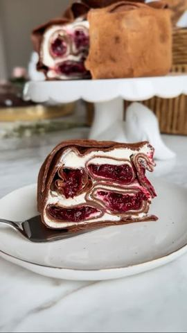

Moja beleška
Sačuvano
Ocena
Sastojci
Priprema
(od ove smese dobije se oko 12 palačinki, za torticu je dovoljno desetak) Beli fil 🧁 Višnja sos 🍒 (gustin dodati pred kraj kuvanja i skloniti sa ringle) Slaganje: U kalup prečnika oko 20 cm postaviti tri palačinke tako da im ivice prelaze preko ivica kalupa. Premazati dno belim filom, a zatim ređati urolane palačinke filovane belim kremom i višnjama — u krug, kao kad se slaže pita. Posle svakog kruga premazati belim filom. Na kraju, ušuškati palačinke koje prelaze ivice, posuti kakaom i ostaviti nekoliko sati u frižideru da se lepo stegne.
Originalni opis sa Instagrama
Ako nešto zaslužuje počasno mesto na uskršnjoj trpezi, onda je to ova torta — lagana, kremasta, sočna, savršen spoj čokoladnih palačinaka, bele čokolade, mascarpone sira i višanja. Presek koji oduzima dah i ukus koji se pamti! 🍒 A uz ovakve praznične čarolije, dobro je imati malog tajnog saveznika pri ruci. Kada praznični zalogaji postanu malo previše, meni u pomoć uvek uskače Pepto soda — broj 1 suplement u protiv gorušice i nelagodnosti u stomaku. Uz svaku kupljenu Pepto Sodu putem web shopa https://www.goodwill.rs/, na poklon dobijate kecelju, rukavicu ili varjaču! Pokloni su zagarantovani dok traju zalihe, pa požurite! Za ovu čokoladnu torticu biće vam potrebno: Palačinke 🥞 — 3 jaja — 300 g brašna — 345 ml mleka — 330 ml kisele vode — 75 ml ulja — prstohvat soli — 30 g kakao praha (od ove smese dobije se oko 12 palačinki, za torticu je dovoljno desetak) Beli fil 🧁 — 500 g mascarpone sira — 250 ml slatke pavlake — 150 g otopljene bele čokolade — 1 kašika arome vanile Višnja sos 🍒 — 400 g višanja — 6 kašika kristal šećera — 2 vanilin šećera — 1 kašika soka od limuna — 1 puna kašika gustina razmućena u malo vode (gustin dodati pred kraj kuvanja i skloniti sa ringle) Slaganje: U kalup prečnika oko 20 cm postaviti tri palačinke tako da im ivice prelaze preko ivica kalupa. Premazati dno belim filom, a zatim ređati urolane palačinke filovane belim kremom i višnjama — u krug, kao kad se slaže pita. Posle svakog kruga premazati belim filom. Na kraju, ušuškati palačinke koje prelaze ivice, posuti kakaom i ostaviti nekoliko sati u frižideru da se lepo stegne. Uživajte 🍰🪺🌸 • • • @goodwill_rs #torta #uksrsnjatorta #visnja #palacinke #cokoladnepalacinke #ukusnahrana #brzoilako #recept